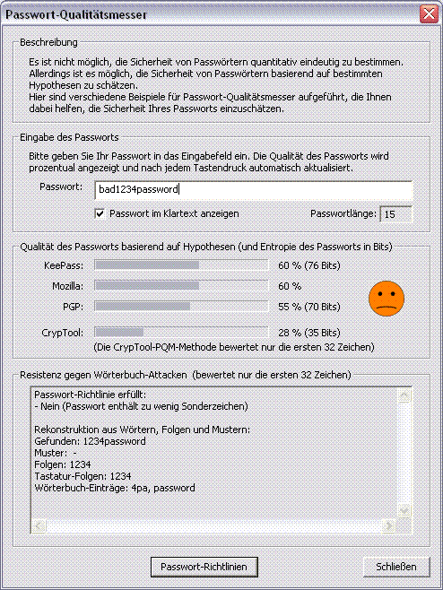

Sie erreichen diesen Dialog über den Menüeintrag Einzelverfahren \ Tools \ Passwort-Qualitätsmesser.
Die exakte Bestimmung der Sicherheit eines Passworts ist nicht möglich, da zu viele Faktoren eine Rolle spielen. Dieser Dialog enthält verschiedene Passwort-Qualitätsmesser, die Ihnen dabei helfen sollen, die Sicherheit Ihrer Passwörter einzuschätzen.

Zur Bestimmung der Passwortqualität geben Sie Ihr Passwort in das dafür vorgesehene Eingabefeld ein. Die Qualität Ihres Passworts wird mit jedem Tastendruck aktualisiert und angezeigt.
Die Qualität Ihres Passworts wird mittels vier verschiedener Algorithmen bewertet. Drei dieser Algorithmen stammen aus den Anwendungen KeePass, Mozilla und PGP, die jeweils über einen integrierten Passwort-Qualitätsmesser verfügen. Der vierte Ansatz ist ein experimenteller Ansatz des CrypTool-Teams.
Neben der prozentualen Anzeige im unteren Bereich des Dialogs zeigt ein eingefärbter Smiley die Qualität Ihres Passworts in fünf Abstufungen an: Die Qualität reicht von schlecht (rot) über schwach (orange), durchschnittlich (gelb) und gut (grün) bis hin zu hervorragend (hellgrün). Beachten Sie bitte, dass für die graphische Anzeige ausschließlich das Ergebnis des experimentellen Ansatzes herangezogen wird.
Unter dem Eingabefeld für das Passwort können Sie einstellen, ob Sie das Passwort im Klartext eingeben wollen oder ob die Zeichen des Passworts durch Platzhalter (*) verdeckt sein sollen.
Der Begriff Passwortqualität ist als ein Maß für die Sicherheit von Passwörtern zu verstehen.
Im Kontext der meisten Programme, die die Qualitätsmessung von Passwörtern anbieten, werden Aussagen zur Passwortqualität basierend auf der Passwortentropie getroffen. Diesen Ansatz verfolgen zum Beispiel die Anwendungen PGP und KeePass.
Daneben gibt es andere Ansätze wie beispielsweise den Ansatz des Passwort-Qualitätsmessers, der in den Mozilla-Browser integriert ist. Hier wird das Alphabet, das heißt die Menge an verfügbaren Zeichen für ein Passwort in Buchstabengruppen unterteilt, die unterschiedlich bewertet werden (zum Beispiel Sonderzeichen und Kleinbuchstaben).
Die Anzeige der Passwortqualität geschieht in der Regel prozentual. Die Skalierung unterscheidet sich je nach Ansatz: Für entropiebasierte Passwort-Qualitätsmesser wird von der Annahme ausgegangen, dass eine Passwortqualität von 100% einer Passwortentropie von 128 Bit entspricht. Andere Ansätze verfolgen andere Techniken zur Skalierung der Passwortqualität.
Anhand von zwei Beispielen soll hier gezeigt werden, wie sich die unterschiedlichen Ansätze der Qualitätsmessung auf das Ergebnis auswirken:
Klammert man die unsachgemäße Handhabung und Aufbewahrung von Passwörtern aus, so hängt die Sicherheit von Passwörtern im Wesentlichen von der Länge des Passworts, der Größe des Passwortraums und der Entropie des Passworts ab.
Die Passwortlänge übt einen großen Einfluss auf die Sicherheit eines Passworts aus. Ist ein Passwort zu kurz, so kann es verhältnismäßig einfach erraten werden. Kurze Passwörter sind schlechte Passwörter. Allgemein gilt: Je länger ein Passwort ist, desto besser.
Der Passwortraum ist die Menge an Passwörtern, die sich aus der verfügbaren Menge an Zeichen - dem Alphabet - bilden lassen. Geht man beispielsweise von einem Alphabet mit 52 Buchstaben (Groß- und Kleinschreibung) und zehn Ziffern aus, dann erstreckt sich der Passwortraum bei einer Passwortlänge von acht Zeichen über 62^8, das heißt über etwa 200 Billionen mögliche Passwörter. Vergrößert man das Alphabet um zehn weitere Zeichen (z.B. durch Sonderzeichen), dann vergrößert sich der Passwortraum auf mehr als das Dreifache. Allgemein gilt: Je größer der Passwortraum ist, desto besser.
Die Passwortentropie ist ein Maß dafür, wie "zufällig" ein Passwort aus dem vorgegebenen Passwortraum ausgewählt wird. Man kann die Entropie eines Passworts basierend auf gewissen Hypothesen exakt bestimmen.
Bemerkung:
Auch wenn der Passwort-Qualitätsmessers eine hohe Prozentzahl anzeigt, ist dies keine Garantie dafür, dass Sie ein gutes Passwort gewählt haben! Bisher erfolgt zum Beispiel überhaupt kein Abgleich mit einem Wörterbuch (Wörter aus Wörterbüchern oder auch Eigennamen sind grundsätzlich schlechte Passwörter). Das CrypTool-Team plant, dies im experimentellen Ansatz in der nächsten Version zu berücksichtigen.